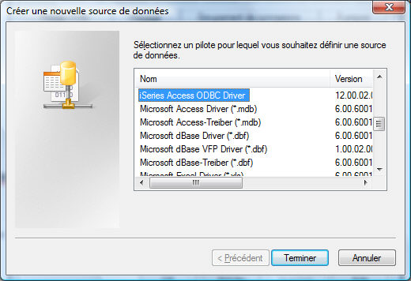

Le programme de paramétrage XPSQL.dhop utilise l'interface standard ODBC pour créer les tables dans la base DB2 du serveur i. L'accès par ODBC nécessite la configuration d'une source de données. L'icône "ODBC" du panneau de configuration permet d'administrer les sources de données. Il convient d'ajouter une source de données dans les sources de données système avec le pilote "iSeries Access ODBC Driver" (on pourra nommer la source du nom du serveur par exemple), puis de la configurer grâce au bouton Configurer.

Le serveur XLAN utilise l'interface CLI pour accéder à la base DB2.